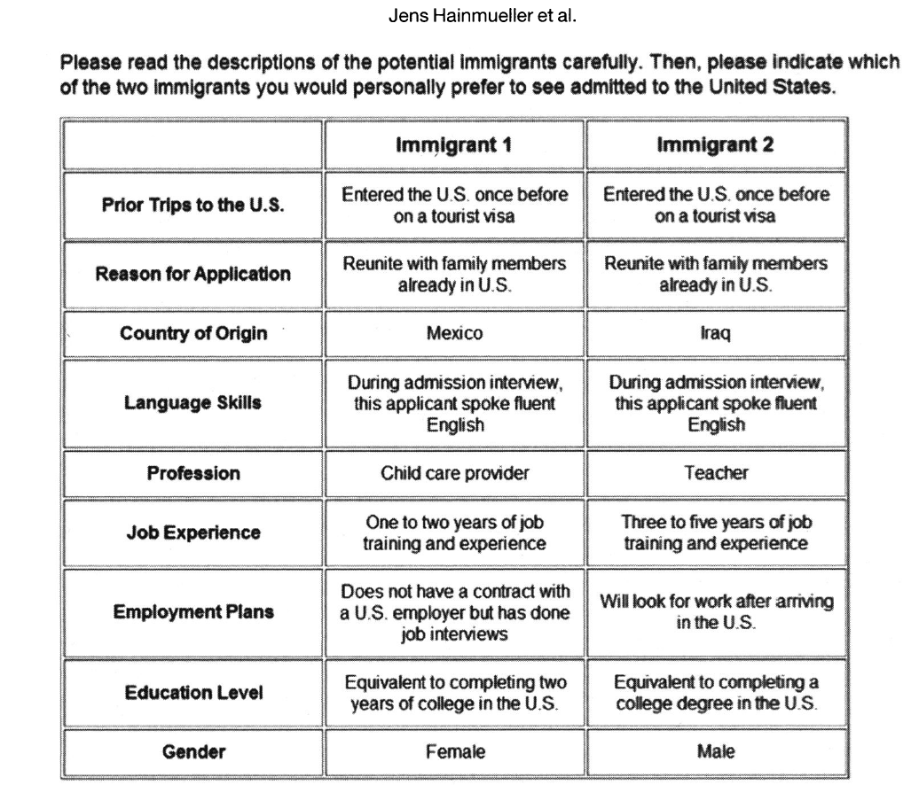

10 Things to Know About Survey Experiments
Survey experiments are widely used by social scientists to study individual preferences. This guide discusses the functions and considerations of survey experiments.
1 What is a survey experiment
A survey experiment is an experiment conducted within a survey. In an experiment, a researcher randomly assigns participants to at least two experimental conditions. The researcher then treats each condition differently. Because of random assignment, any differences between the experimental conditions would result from the treatment. In a survey experiment, the randomization and treatment occur within a questionnaire.
2 Why do a survey experiment
Survey experiments are useful when researchers want to learn about individual perceptions, attitudes, or behaviors. They are especially useful when a regular survey, without experimentation, may generate biased or even nonsensical responses. For example, if researchers are interested in studying the effects of policy information on individual preferences for a policy, directly asking each survey respondent “how does this information affect your attitudes toward the policy?” may raise concerns about the accuracy and truthfulness of the responses. Rather, researchers may find it useful to provide the policy information to a randomized subset of respondents, followed by comparing the policy preferences between those who are subject to the policy information and those who are not.
More generally, survey experiments help to measure individual preferences. For example, when the preferences of interest are multidimensional, regular surveys may not be able to reliably measure such complex preferences through individual self-reports. Other preferences, such as racist attitudes and illegal behaviors, may be sensitive — preferences with which respondents do not want to be publicly associated. Direct questioning techniques may thus understate the prevalence of these preferences. In these cases, survey experiments, compared to regular surveys, can be useful to address these measurement challenges.
There are various types of survey experiments. Five of them — conjoint experiments, priming experiments, endorsement experiments, list experiments, and randomized response — are covered in the following sections.
3 Conjoint experiments
Conjoint experiments are useful when researchers aim to measure multidimensional preferences (i.e., preferences that are characterized by more than one attribute). In a typical conjoint experiment, researchers repeatedly ask respondents to choose between two distinct options and randomly vary the characteristics of these two options.1 Researchers may also ask respondents to rate each option on a scale. In both cases, respondents express their preferences toward a large number of pairings with randomized attributes.
Hainmueller, Hopkins, and Yamamoto (2014) demonstrate the use of conjoint experiments in a study about support for immigration. The authors showed respondents two immigrant profiles and asked (a) which immigrant the respondent would prefer be admitted to the Unites States and (b) how the respondent rated each immigrant on a scale from 1-7. The authors randomly varied nine attributes of the immigrants (gender, education, employment plans, job experience, profession, language skills, country of origin, reasons for applying, and prior trips to the United States), yielding thousands of unique immigrant profiles. This process was repeated five times so that each respondents saw and rated five pairs of immigrants. Through this procedure, the authors assessed how these randomly varied components influence support for the immigrant.
Respondents saw:

The conjoint experiment thus allows us to measure how multiple immigrant characteristics, such as their gender or country of origin, shape respondents’ attitudes toward the immigrants. Another advantage of this survey experiment, compared to a non-experimental survey, is that it preempts the need for respondents to directly express sensitive preferences; instead, they indirectly reveal their preferences. For example, while respondents who hold sexist attitudes may be less willing to openly express preferences for male immigrants due to social desirability bias, they may find it more comfortable to choose — and therefore reveal their preferences for — male immigrant profiles in this less direct setting.2 Given these advantages, the use of conjoint experiments is not confined to the measurement of immigrant preferences; researchers have also applied conjoint experiments to study other multidimensional preferences, such as candidate choice and policy packages.
4 Priming experiments
In a priming experiment, researchers expose respondents in the treatment group to a stimulus representing topic X in order to influence their considerations at the top of their head when responding to a survey question about topic Y. The control group, however, is not exposed to the stimulus. Therefore, the difference in expressed preferences regarding Y between the treatment and control groups is due to exposure to the treatment stimulus.
Priming experiments are a broad class and include any experiment that makes a specific topic salient in the mind of the respondent. One common method of priming is the use of images. For example, Brader, Valentino, and Suhay (2008) used images as a priming instrument to estimate the role of race in shaping immigration preferences. The researchers showed subjects a positive or negative news article about immigration paired with a picture of a European immigrant or an Hispanic immigrant. Subjects expressed negative attitudes about immigration when the negative news article was paired with the Hispanic immigrant picture but not in other conditions. The picture primed people to think about Hispanic immigrants, and thinking about Hispanic immigrants reduced support for immigration compared to thinking about European immigrants.
More broadly, priming experiments can be useful when researchers are interested in learning about the influence of context. By making a specific context of interest salient to a randomized subset of respondents, researchers can gauge the impact of this primed context on the measured outcome of interest.
5 Endorsement experiments
Endorsement experiments measure attitudes toward a sensitive object, usually a controversial political actor or group. In a typical endorsement experiment, respondents are asked how much they support a policy. In the treatment condition, the policy is said to be endorsed by an actor or a group. In the control condition, however, this endorsement information is omitted. The average difference in support between the endorsed and unendorsed policy represents the change in support for the policy because of the endorsement of the controversial figure.
For example, Nicholson (2012) used an endorsement experiment to study partisan bias in the United States during the 2008 Presidential campaign. The researchers asked respondents about policies, varying whether the policy was endorsed by the Presidential candidates of the two main political parties, Barack Obama (Democrat) and John McCain (Republican). Respondents were told:
As you know, there has been a lot of talk about immigration reform policy in the news. One proposal [backed by Barack Obama/backed by John McCain] provided legal status and a path to legal citizenship for the approximately 12 million illegal immigrants currently residing in the United States. What is your view of this immigration reform policy?
On one hand, the difference between the control condition and the Obama (McCain) condition for Democrats (Republicans) indicates in-party bias. On the other, the difference between the control condition and the Obama (McCain) condition for Republicans (Democrats) indicates out-party bias. This experiment helps researchers gauge the favorability toward the potentially sensitive item (i.e., the political actor), as other well-designed endorsement experiments also do. Because endorsement experiments preempt the need for respondents to self-report their support for a controversial object, they are especially useful in politically sensitive contexts. For example, they have been used to measure public support for militant groups (e.g., Bullock, Imai, and Shapiro (2011); Lyall, Blair, and Imai (2013)).
6 List Experiments
List experiments (also known as the item count technique) measure a sensitive attitude or behavior when researchers expect respondents to falsify it if it is solicited using a direct question. For example, respondents may be reluctant to admit that they hold racially conservative views (Kuklinski et al. 1997) or engage in illegal behaviors (García-Sánchez and Queirolo 2021) even after being assured of the survey’s anonymity.
In a list experiment, the researcher randomly assigns respondents to a control or treatment condition. The control condition presents respondents with a list of items; the treatment condition presents respondents with the same list plus a treatment item measuring the attitude or behavior of interest. Respondents are then asked how many of these items apply to them. The average difference between the treatment and control conditions represents the percentage of respondents for whom the treatment item applies. A list experiment does not tell the researcher about the attitude or behavior of any individual respondent, but it tells her about the prevalence of the sensitive attitude in her sample population. Answers to this question are anonymous because the respondent’s attitude toward each item cannot be determined unless the respondent answers that all or none of the items apply to them.
For example, Kuklinski et al. (1997) studied racial animus with a list experiment. They told respondents:
Now I am going to read you three things that sometimes make people angry or upset. After I read all three, just tell me HOW MANY of them upset you. I don’t want to know which ones, just HOW MANY.
(1) the federal government increasing the tax on gasoline
(2) professional athletes getting million-dollar contracts
(3) large corporations polluting the environment
(4) a black family moving in next door
In the above example, the fourth item was withheld from the control condition. The authors found that the mean number of items chosen in the treatment group was 2.37, compared to 1.95 in the control group. The difference of 0.42 between treatment and control suggests that 42% of respondents would be upset by a black family moving in next door.
Despite the anonymity provided by a list experiment, respondents may still worry that their response reflects their attitudes about the sensitive item. When respondents worry about a lack of anonymity, they may increase or decrease their response to portray themselves in the best light possible, rather than answer honestly (Leary and Kowalski 1990). Given this limitation, researchers have developed other types of list experiments, including double list experiments and placebo-controlled list experiments. Interested readers may consult Glynn (2013) and Riambau and Ostwald (2019) for detailed discussions about their implementation, as well as how they help to overcome some of the potential pitfalls of simple list experiments.
7 Randomized Response
The randomized response technique is also used to measure a sensitive attitude or behavior when the researcher expects respondents to lie about it if asked a direct question.3 In the most common version of the randomized response technique, respondents are directly asked a yes or no question about a sensitive topic. The respondent is also given some randomization device, such as a coin or die. The respondent is told to answer the question when the randomization device takes on a certain value (e.g., tails) or to simply say “yes” when the randomization device takes a different value (e.g., heads). Researchers assume that respondents will believe their anonymity is protected because the researcher cannot know whether a “yes” resulted from agreement with the sensitive item or the randomization device.
For example, Blair, Imai, and Zhou (2015) studied support for militants in Nigeria with the randomized response technique. They gave respondents a die and had the respondent practice throwing it. They then told respondents:
For this question, I want you to answer yes or no. But I want you to consider the number of your dice throw. If 1 shows on the dice, tell me no. If 6 shows, tell me yes. But if another number, like 2 or 3 or 4 or 5 shows, tell me your opinion about the question that I will ask you after you throw the dice.
[ENUMERATOR TURN AWAY FROM THE RESPONDENT]
Now throw the dice so that I cannot see what comes out. Please do not forget the number that comes out.
[ENUMERATOR WAIT TO TURN AROUND UNTIL RESPONDENT SAYS YES TO]: Have you thrown the dice? Have you picked it up?
Now, during the height of the conflict in 2007 and 2008, did you know any militants, like a family member, a friend, or someone you talked to on a regular basis? Please, before you answer, take note of the number you rolled on the dice.
In expectation, one-sixth of respondents answer “yes” due to the die throw. The researcher can thus determine what percentage of respondents engaged in the sensitive behavior. Here, however, respondents might not feel that their answers to randomized response questions were truly anonymous. This is because if a respondent answered yes, the answer could have been dictated by the randomization device, but it could also signal agreement with the sensitive item.4 Indeed, there are other types of randomized response techniques that address this limitation, including the repeated randomized response technique and the crosswise model. We refer interested readers to Azfar and Murrell (2009) and Jann, Jerke, and Krumpal (2011) for the logic and implementation of these techniques.
8 Implementation
To implement survey experiments, researchers need to write up multiple versions of a survey: at least one for the control condition(s) and at least one for the treatment condition(s). Then, researchers need a randomization device that allows them to randomize the survey version shown to the respondents. There are many platforms that facilitate the implementation of survey experiments, with Qualtrics being one of the most popular tools among survey researchers.
While the treatment is typically imposed through text, the treatment stimulus can also be of other forms, including images and videos. The key is to map the treatment directly onto the theoretical variable of interest. That is, if the researcher is interested in studying the effect of X on Y, the text, image, or video (or any of their combination) should induce a change in X and not in other confounding variables.5 Visual aids, if carefully provided, can be helpful in different settings. For example, researchers have used photos as experimental stimuli to investigate the impact of candidate appearance on vote choice (Douglas et al. 2017) and the effects of gender and racial diversity in shaping the legitimacy of international organizations (Chow and Han 2023).
9 Considerations
Survey experiments can be an effective tool for researchers to measure sensitive attitudes and learn about causal relationships. Not only can they be done quickly and iteratively, but they may also be included on mass online surveys because they do not require in-person contact to implement. This means that a researcher can plan a sequence of online survey experiments, changing the intervention and measured outcomes from one experiment to the next to learn about the mechanisms behind the treatment effect very quickly (Sniderman 2018).
But researchers need to be careful about survey satisficing, which occurs when respondents put in minimal effort to understand and answer a survey question.6 In the presence of satisficing behavior, the treatment embedded in the survey experiments may not be received by respondents as intended. As such, the measured preferences will be unreliable. Given this concern, researchers should always design survey experiments that are easy to understand. The length and complexity of the survey and experimental stimuli should also be kept at a minimum level, whenever possible. A related consideration is respondent attentiveness, an issue that is extensively discussed by Alvarez et al. (2019).
Researchers also need to consider the strength of their treatment. Sometimes the experimental stimulus is unable to generate a meaningful change in the subsequently measured attitude or behavior not because the treatment is unrelated to the outcome variable of interest, but because the treatment itself is too weak. For example, for an information provision experiment where the experimental stimulus is some factual information related to topic Y, the treatment may fail to change views on Y not because the information plays no role in shaping individual attitudes toward Y, but because respondents have already been exposed to this information in the real world.7 More generally, researchers need to watch out for preatreatment effects (Druckman and Leeper 2012). If respondents, before participating in the survey experiment, have already encountered the experimental stimulus, there may be no measured difference between treatment and control groups because all respondents were “pretreated” with the stimulus, including those in the control group.
When designing survey experiments, researchers should pay attention to the question wording and ordering. Some terms, for example, may be unfamiliar to certain respondents or interpreted by different respondents in different ways. As such, measurement invariance may set in, such that the same construct is measured differently for different groups of individuals. In other cases, the question ordering itself may bias how individuals provide their responses (Gaines, Kuklinski, and Quirk 2007). These considerations are all important to bear in mind when researchers design their survey experiments, since they fundamentally shape the inferences one can draw from the data.
10 Limitations
While survey experiments offer a fruitful way to measure individual preferences, researchers are often more concerned about real-world outcomes. When preferences are measured — and treatments are delivered — in a survey setting, there is no guarantee that the survey-experimental findings will translate into the real world. Therefore, researchers should be cautious when they extrapolate from survey experiments (Barabas and Jerit 2010). For more discussions on the strengths and limitations of survey experiments, see:
- Mutz (2011) “Population-Based Survey Experiments.”
- Sniderman (2018) “Some Advances in the Design of Survey Experiments” in the Annual Review of Political Science.
- Lavrakas et al. (2019) “Experimental Methods in Survey Research: Techniques that Combine Random Sampling with Random Assignment.”
- Diaz, Grady, and Kuklinski (2020) “Survey Experiments and the Quest for Valid Interpretation” in the Sage Handbook of Research Methods in Political Science and International Relations.
11 References
Footnotes
See Hainmueller, Hopkins, and Yamamoto (2014) and Green and Rao (1971).↩︎
See Warner (1965), Boruch (1971), D. Gingerich (2015), and D. W. Gingerich (2010).↩︎
See Edgell, Himmelfarb, and Duchan (1982) and Yu, Tian, and Tang (2008).↩︎
See Dafoe, Zhang, and Caughey (2018) on information equivalence.↩︎
See Haaland, Roth, and Johannes (2023) for a review of information provision experiments.↩︎